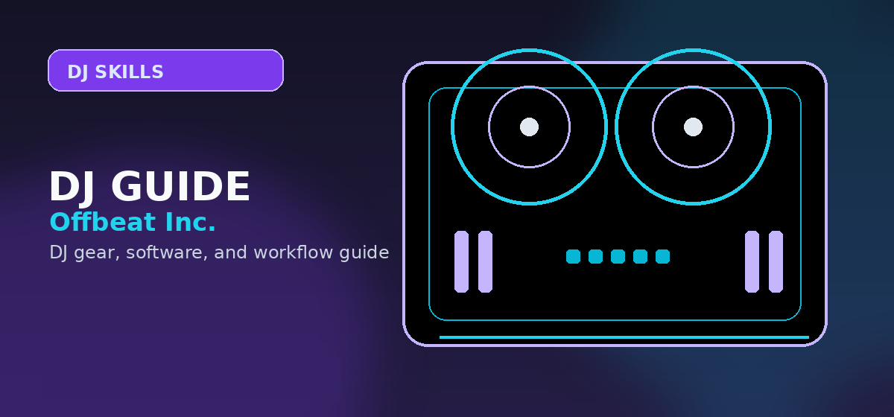

How to Mix Music for Beginners: Beatmatching, EQ & Transitions (2026)
A practical beginner DJ mixing lesson: how to count music, match tempo, cue cleanly, swap EQ, control levels, build transitions, and structure the first month of practice.

Disclosure: This page uses affiliate links. We may earn a commission at no extra cost to you. Full disclosure →
Beginner mixing formula: pick two compatible tracks, count the phrase, cue the first beat of the incoming track, match tempo, start the new track on a phrase boundary, remove clashing bass, and record the result. The goal is not a flashy transition. The goal is a clean handoff that sounds intentional.
Recommended beginner controller
A compact two-channel controller with real EQ knobs, cue buttons, performance pads, and headphone cueing is enough to learn every technique on this page.
What “mixing music” actually means
For a beginner DJ, mixing is the controlled overlap between two songs. You are managing timing, energy, volume, and frequency balance so the next track arrives without sounding accidental. A basic mix has four parts: prepare the incoming track in headphones, start it on time, blend it into the master output, then exit the old track cleanly.
Step 1: Pick two beginner-friendly tracks
Do not start with random songs from different genres. Choose two tracks with similar BPM, clear drums, and long intros or outros. House, techno, disco edits, tech house, and simple hip-hop instrumentals are easier than songs with live drummers, abrupt tempo changes, or busy vocals.
- Start with tracks within about 4–6 BPM of each other.
- Use tracks with obvious kick drums before attempting syncopated rhythms.
- Avoid mixing two lead vocals at the same time.
- Set cue points at the first clean downbeat, first breakdown, and outro.
Step 2: Count beats and phrases
Most beginner transitions fail because the next track starts at the wrong musical moment. Count “1, 2, 3, 4” with the kick drum. Four counts make a bar. Eight bars usually make a phrase. If the outgoing track changes after 32 beats, the incoming track should usually start on that same phrase boundary.
| Count | What it means | How to use it |
|---|---|---|
| 4 beats | One bar in common dance music | Use it to stay oriented while cueing. |
| 8 bars / 32 beats | A common phrase length | Start a new track here for cleaner arrangement changes. |
| 16 bars / 64 beats | Longer intro or outro blend | Use it for smoother house, techno, and progressive transitions. |
Step 3: Beatmatch by ear before relying on sync
Sync is useful, but ear training matters. Load track A on deck 1 and track B on deck 2. Play track A through the speakers. Cue track B in your headphones. Start track B on a downbeat, then listen for whether its kick drum is ahead or behind track A.
Match the BPM roughly
Use the tempo fader to get the incoming track close. Do not chase the display constantly; listen to the kick drums.
Nudge instead of restarting
If the incoming kick is late, nudge it forward. If it is early, slow it briefly. Small corrections beat panic restarts.
Hold alignment for 30 seconds
Before blending live, prove you can keep both tracks aligned in headphones for at least half a minute.
Step 4: Set gain before touching the faders
Gain controls the input level of each channel. The volume fader controls how much of that channel reaches the master output. Beginners often fix level differences with the fader, but that makes transitions inconsistent. Set the incoming channel gain first so both tracks hit a similar meter level before the blend begins.
- Keep meters out of the red unless your mixer manual specifically says otherwise.
- Match perceived loudness, not just peak meter movement.
- Lower the louder track rather than forcing the quieter track into clipping.
Step 5: Use EQ to avoid muddy transitions
The safest beginner EQ move is a bass swap. Start the incoming track with its low EQ turned down. Blend its mids and highs first. When the phrase changes, lower the bass on the outgoing track while raising the bass on the incoming track. This keeps the groove strong without two kick-and-bass patterns fighting for space.
| EQ band | Beginner use | Common mistake |
|---|---|---|
| Low / bass | Swap between tracks during the transition. | Leaving both basslines full-volume. |
| Mid | Control vocals, synths, snares, and musical body. | Cutting too much and making the incoming track sound hollow. |
| High | Blend hats, shakers, and brightness. | Stacking harsh high hats from both tracks. |
Three beginner transition recipes
Intro-to-outro blend
Start the new track’s intro over the old track’s outro. Match BPM, keep the incoming bass low, blend for 16 or 32 beats, then swap bass and fade out.
Breakdown handoff
Bring the incoming track in during a breakdown or reduced-energy section. This hides timing imperfections and makes the next drop feel more deliberate.
Echo-out escape
When tracks do not blend naturally, use echo or reverb on the outgoing track, cut its low end, and introduce the next track cleanly on the next downbeat.
30-day beginner practice plan
| Week | Focus | Daily drill |
|---|---|---|
| 1 | Counting and cueing | Mark downbeats and practice starting track B exactly on track A’s phrase change. |
| 2 | Beatmatching | Match two tracks by ear and keep them aligned for 30 seconds before blending. |
| 3 | EQ transitions | Practice 10 bass-swap transitions and write down which ones sounded muddy. |
| 4 | Recording full practice sets | Record a 20–30 minute mix, review mistakes, then record it again with corrections. |
Common beginner mistakes
- Starting on the wrong beat: the first beat of a phrase matters more than the first beat you happen to catch.
- Watching waveforms instead of listening: visual aids help, but your ears decide whether the mix works.
- Overusing effects: filters, echo, and reverb should hide a problem only when the basic blend already makes sense.
- Changing too many controls at once: move one fader or EQ knob deliberately, then listen before changing another.
- Never recording practice: mistakes are easier to hear later than while your hands are busy.
Beginner mixing gear checklist
You do not need expensive gear to learn. You need reliable cue monitoring, EQ controls, tempo faders, and enough music to practice repeatable transitions.
Official source links
Use these official pages to confirm current software compatibility, controller support, and beginner setup requirements before buying gear.
Frequently Asked Questions
Can I learn to mix music without sync?
Yes. Start with tracks in a similar BPM range and practice cueing, nudging, and tempo adjustments in headphones. Sync can still be useful later, but ear training makes you less dependent on software.
How long does it take to make clean beginner DJ mixes?
Most beginners can make basic clean transitions after a few weeks of focused daily practice. Consistent 20–30 minute sessions work better than occasional long sessions.
What is the easiest transition for beginners?
An intro-to-outro blend with a bass swap is the safest first transition. It gives you time to match tempo, control EQ, and exit the outgoing track without rushing.
Should I learn EQ or beatmatching first?
Learn basic beatmatching and phrasing first, then add EQ. If timing is wrong, EQ will not save the transition; if timing is close, EQ makes the blend sound polished.